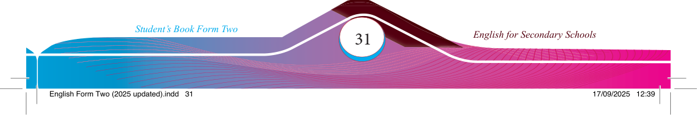

Did you
know
?
Activity 2
Producing new vocabulary by attaching prefi xes and suffi xes
(a) Study the picture that follows and write a brief explanation of what you understand from it.

Affi xation is a process of adding an affi x to the base or root to modify its meaning or create a new word. A root is the fundamental part of a word that carries the primary meaning and can stand alone or be combined with affi xes. Affi xation is a common method for expanding vocabulary by adding meaningful elements into existing words. Affi xes are morphemes that can be attached to the beginning, middle or end of a word/root. The most common types of affi xes are prefi xes and suffi xes. A prefi x is added to the beginning of the word/root. For example, in the word ‘unhappy’, ‘un-’ is a prefi x added to the word ‘happy’. In contrast, a suffi x is added to the end of a word/root.
In English, suffi xes can change the meanings of words and often alter their grammatical classes. For example, adding the suffi x ‘-ness’ to the adjective
‘happy’ forms the noun ‘happiness.’ Similarly, adding the suffi x ‘-ly’ to the adjective ‘quick’ forms the adverb ‘quickly.’ In English, suffi xes can also indicate tense, plurality, or comparison, as seen in ‘talked’ (past tense),
‘books’ (plural), and ‘stronger’ (comparative).